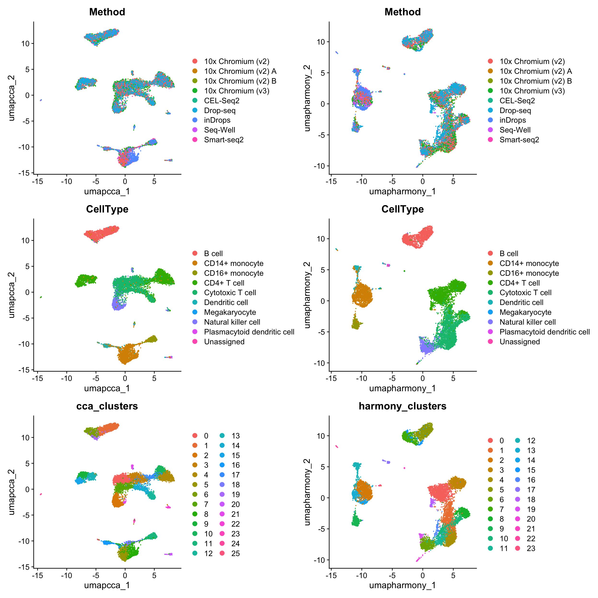

```{r}
#| eval: false
library(SeuratData)
InstallData("pbmcsca")
library(Seurat)
obj <- LoadData("pbmcsca")
```11 Seurat v5单细胞数据整合分析
原文：Integrative analysis in Seurat v5
原文发布日期：2023年10月31日
Integration of single-cell sequencing datasets, for example across experimental batches, donors, or conditions, is often an important step in scRNA-seq workflows. Integrative analysis can help to match shared cell types and states across datasets, which can boost statistical power, and most importantly, facilitate accurate comparative analysis across datasets.
In previous versions of Seurat we introduced methods for integrative analysis, including our ‘anchor-based’ integration workflow. Many labs have also published powerful and pioneering methods, including Harmony and scVI, for integrative analysis. We recognize that while the goal of matching shared cell types across datasets may be important for many problems, users may also be concerned about which method to use, or that integration could result in a loss of biological resolution.
In Seurat v5, we introduce more flexible and streamlined infrastructure to run different integration algorithms with a single line of code. This makes it easier to explore the results of different integration methods, and to compare these results to a workflow that excludes integration steps.
For this vignette, we use a dataset of human PBMC profiled with seven different technologies (Ding et al. 2020), profiled as part of a systematic comparative analysis (pbmcsca). The data is available as part of our SeuratData package.

11.1 加载数据
从本地下载好的数据读取：
An object of class Seurat
33694 features across 31021 samples within 1 assay
Active assay: RNA (33694 features, 0 variable features)
2 layers present: counts, datacolnames(obj)[1:8][1] "pbmc1_SM2_Cell_108" "pbmc1_SM2_Cell_115" "pbmc1_SM2_Cell_133"
[4] "pbmc1_SM2_Cell_142" "pbmc1_SM2_Cell_143" "pbmc1_SM2_Cell_144"
[7] "pbmc1_SM2_Cell_146" "pbmc1_SM2_Cell_148"rownames(obj)[1:5][1] "TSPAN6" "TNMD" "DPM1" "SCYL3" "C1orf112"head(obj@meta.data, 5) orig.ident nCount_RNA nFeature_RNA nGene nUMI
pbmc1_SM2_Cell_108 pbmc1 437125 2200 2200 437125
pbmc1_SM2_Cell_115 pbmc1 335596 2438 2438 335596
pbmc1_SM2_Cell_133 pbmc1 302204 1874 1874 302204
pbmc1_SM2_Cell_142 pbmc1 377420 2480 2480 377420
pbmc1_SM2_Cell_143 pbmc1 385514 2196 2196 385514
percent.mito Cluster CellType Experiment
pbmc1_SM2_Cell_108 0.0297434465355702 0 Cytotoxic T cell pbmc1
pbmc1_SM2_Cell_115 0.0311521658159055 0 Cytotoxic T cell pbmc1
pbmc1_SM2_Cell_133 0.0431128105727693 0 Cytotoxic T cell pbmc1
pbmc1_SM2_Cell_142 0.0260323569927476 0 Cytotoxic T cell pbmc1
pbmc1_SM2_Cell_143 0.0404759383962183 0 Cytotoxic T cell pbmc1
Method
pbmc1_SM2_Cell_108 Smart-seq2
pbmc1_SM2_Cell_115 Smart-seq2
pbmc1_SM2_Cell_133 Smart-seq2
pbmc1_SM2_Cell_142 Smart-seq2
pbmc1_SM2_Cell_143 Smart-seq2table(obj$Method)
10x Chromium (v2) 10x Chromium (v2) A 10x Chromium (v2) B 10x Chromium (v3)
3362 3222 3222 3222
CEL-Seq2 Drop-seq inDrops Seq-Well
526 6584 6584 3773
Smart-seq2
526 The object contains data from nine different batches (stored in the Method column in the object metadata), representing seven different technologies. We will aim to integrate the different batches together.
11.2 数据质控
过滤低质量细胞：
obj <- subset(obj, nFeature_RNA > 1000)这个地方为了验证后面整合的效果对细胞类型提前进行了注释。
table(obj$CellType)
B cell CD14+ monocyte
1525 1557
CD16+ monocyte CD4+ T cell
404 3018
Cytotoxic T cell Dendritic cell
2791 281
Megakaryocyte Natural killer cell
9 763
Plasmacytoid dendritic cell Unassigned
78 8 11.3 分割数据
In previous versions of Seurat, if we want to integrate this data, we would require the data to be represented as nine different Seurat objects. When using Seurat v5 assays, we can instead keep all the data in one object, but simply split the layers:
obj[["RNA"]] <- split(obj[["RNA"]], f = obj$Method)
objAn object of class Seurat
33694 features across 10434 samples within 1 assay
Active assay: RNA (33694 features, 0 variable features)
18 layers present: counts.Smart-seq2, counts.CEL-Seq2, counts.10x_Chromium_v2_A, counts.10x_Chromium_v2_B, counts.10x_Chromium_v3, counts.Drop-seq, counts.Seq-Well, counts.inDrops, counts.10x_Chromium_v2, data.Smart-seq2, data.CEL-Seq2, data.10x_Chromium_v2_A, data.10x_Chromium_v2_B, data.10x_Chromium_v3, data.Drop-seq, data.Seq-Well, data.inDrops, data.10x_Chromium_v2After splitting, there are now 18 layers (a counts and data layer for each batch).
11.4 未整合情况下的标准scRNA-seq分析流程
标准化、找高变基因、归一化、降维
We can now run a standard scRNA-seq analysis (i.e. without integration). Note that since the data is split into layers, normalization and variable feature identification is performed for each batch independently (a consensus set of variable features is automatically identified).
obj <- NormalizeData(obj)
obj <- FindVariableFeatures(obj)
obj <- ScaleData(obj)
obj <- RunPCA(obj)
obj <- RunUMAP(obj,
dims = 1:30,
reduction = "pca",
reduction.name = "umap.unintegrated") # name to store dimensional reduction in the Seurat object聚类、可视化
We can now visualize the results of a standard analysis without integration. Note that cells are grouping both by cell type and by underlying method. While a UMAP analysis is just a visualization of this, clustering this dataset would return predominantly batch-specific clusters. Especially if previous cell-type annotations were not available, this would make downstream analysis extremely challenging.
obj <- FindNeighbors(obj, dims = 1:30, reduction = "pca")
obj <- FindClusters(obj, resolution = 2, cluster.name = "unintegrated_clusters")Modularity Optimizer version 1.3.0 by Ludo Waltman and Nees Jan van Eck
Number of nodes: 10434
Number of edges: 412660
Running Louvain algorithm...
Maximum modularity in 10 random starts: 0.8981
Number of communities: 48
Elapsed time: 0 seconds可以看到，不同的测序技术间的细胞类型差异较大。因此需要对数据进行整合。
11.5 数据整合
Seurat v5 enables streamlined integrative analysis using the IntegrateLayers function. The method currently supports five integration methods. Each of these methods performs integration in low-dimensional space, and returns a dimensional reduction (i.e. integrated.rpca) that aims to co-embed shared cell types across batches:
Anchor-based CCA integration (
method=CCAIntegration)Anchor-based RPCA integration (
method=RPCAIntegration)Harmony (
method=HarmonyIntegration)FastMNN (
method= FastMNNIntegration)scVI (
method=scVIIntegration)
Note that our anchor-based RPCA integration represents a faster and more conservative (less correction) method for integration. For interested users, we discuss this method in more detail in our previous RPCA vignette.
You can find more detail on each method, and any installation prerequisites, in Seurat’s documentation (for example, ?HarmonyIntegration). For example, harmony整合需要先安装harmony包（install.packages("harmony")）；scVI integration requires reticulate which can be installed from CRAN (install.packages("reticulate")) as well as scvi-tools and its dependencies installed in a conda environment. Please see scVI installation instructions here.
Each of the following lines perform a new integration using a single line of code:
（这里我们选择其中的CCAIntegration和HarmonyIntegration两种方式分别对数据进行整合，整合后后的降维信息分别储存在”integrated.cca”和”harmony”中）
obj <- IntegrateLayers(
object = obj,
method = CCAIntegration,
orig.reduction = "pca",
new.reduction = "integrated.cca",
verbose = FALSE
)
names(obj@reductions)[1] "pca" "umap.unintegrated" "integrated.cca" ```{r}
#| eval: false
obj <- IntegrateLayers(
object = obj,
method = RPCAIntegration,
orig.reduction = "pca",
new.reduction = "integrated.rpca",
verbose = FALSE
)
names(obj@reductions)
```obj <- IntegrateLayers(
object = obj,
method = HarmonyIntegration,
orig.reduction = "pca",
new.reduction = "harmony",
verbose = FALSE
)
names(obj@reductions)[1] "pca" "umap.unintegrated" "integrated.cca"
[4] "harmony" ```{r}
#| eval: false
obj <- IntegrateLayers(
object = obj,
method = FastMNNIntegration,
new.reduction = "integrated.mnn",
verbose = FALSE
)
names(obj@reductions)
``````{r}
#| eval: false
obj <- IntegrateLayers(
object = obj,
method = scVIIntegration,
new.reduction = "integrated.scvi",
conda_env = "../miniconda3/envs/scvi-env",
verbose = FALSE
)
names(obj@reductions)
```11.6 重新降维、聚类、可视化
CCAIntegration：
obj <- RunUMAP(obj,
reduction = "integrated.cca",
dims = 1:30,
reduction.name = "umap.cca")
obj <- FindNeighbors(obj, reduction = "integrated.cca", dims = 1:30)
obj <- FindClusters(obj, resolution = 2, cluster.name = "cca_clusters")Modularity Optimizer version 1.3.0 by Ludo Waltman and Nees Jan van Eck
Number of nodes: 10434
Number of edges: 617481
Running Louvain algorithm...
Maximum modularity in 10 random starts: 0.8039
Number of communities: 26
Elapsed time: 1 secondscolnames(obj@meta.data) [1] "orig.ident" "nCount_RNA" "nFeature_RNA"
[4] "nGene" "nUMI" "percent.mito"
[7] "Cluster" "CellType" "Experiment"
[10] "Method" "unintegrated_clusters" "seurat_clusters"
[13] "cca_clusters" HarmonyIntegration：
obj <- RunUMAP(obj,
reduction = "harmony",
dims = 1:30,
reduction.name = "umap.harmony")
obj <- FindNeighbors(obj, reduction = "harmony", dims = 1:30)
obj <- FindClusters(obj, resolution = 2, cluster.name = "harmony_clusters")Modularity Optimizer version 1.3.0 by Ludo Waltman and Nees Jan van Eck
Number of nodes: 10434
Number of edges: 455235
Running Louvain algorithm...
Maximum modularity in 10 random starts: 0.7917
Number of communities: 25
Elapsed time: 1 secondscolnames(obj@meta.data) [1] "orig.ident" "nCount_RNA" "nFeature_RNA"
[4] "nGene" "nUMI" "percent.mito"
[7] "Cluster" "CellType" "Experiment"
[10] "Method" "unintegrated_clusters" "seurat_clusters"
[13] "cca_clusters" "harmony_clusters" 合并UMAP图：
library(patchwork)
wrap_plots(c(p1, p2), ncol = 2, byrow = F)
11.7 检验细胞类型marker基因的表达
We hope that by simplifying the process of performing integrative analysis, users can more carefully evaluate the biological information retained in the integrated dataset. For example, users can compare the expression of biological markers based on different clustering solutions, or visualize one method’s clustering solution on different UMAP visualizations.
library(ggplot2)
p1 <- VlnPlot(obj,
features = "rna_CD8A",
group.by = "unintegrated_clusters",
pt.size = 0) +
NoLegend() +
ggtitle("CD8A - Unintegrated Clusters")
p2 <- VlnPlot(obj,
"rna_CD8A",
group.by = "cca_clusters",
pt.size = 0) +
NoLegend() +
ggtitle("CD8A - CCA Clusters")
p3 <- VlnPlot(obj,
"rna_CD8A",
group.by = "harmony_clusters",
pt.size = 0) +
NoLegend() +
ggtitle("CD8A - harmony Clusters")
p1 | p2 | p311.8 重新合并layers
Once integrative analysis is complete, you can rejoin the layers - which collapses the individual datasets together and recreates the original counts and data layers. You will need to do this before performing any differential expression analysis. However, you can always resplit the layers in case you would like to reperform integrative analysis.
obj <- JoinLayers(obj)
objAn object of class Seurat
33694 features across 10434 samples within 1 assay
Active assay: RNA (33694 features, 2000 variable features)
3 layers present: data, counts, scale.data
6 dimensional reductions calculated: pca, umap.unintegrated, integrated.cca, harmony, umap.cca, umap.harmony
11.9 对SCTransform处理后的数据的整合
Users can also perform integration using sctransform-normalized data (see Chapter 9 for more information), by first running SCTransform normalization, and then setting the normalization.method argument in IntegrateLayers（和 Section 10.6.2 中一样）。
rm(list = ls())
#重新载入数据、质控、分割
obj <- readRDS("data/pbmcsca.rds")
obj <- subset(obj, nFeature_RNA > 1000)
obj[["RNA"]] <- split(obj[["RNA"]], f = obj$Method)
# 执行SCTransform
obj <- SCTransform(obj)
# 降维
obj <- RunPCA(obj, npcs = 30, verbose = F)
# 整合
#options(future.globals.maxSize = 3e+09)
obj <- IntegrateLayers(object = obj,
method = CCAIntegration,
normalization.method = "SCT",
orig.reduction = "pca",
new.reduction = "integrated.cca",
verbose = F)
# 重新降维、聚类、可视化
obj <- RunUMAP(obj,
dims = 1:30,
reduction = "integrated.cca",
reduction.name = "umap.cca")
obj <- FindNeighbors(obj, dims = 1:30, reduction = "integrated.cca")
obj <- FindClusters(obj, resolution = 2, cluster.name = "cca_clusters")Modularity Optimizer version 1.3.0 by Ludo Waltman and Nees Jan van Eck
Number of nodes: 10434
Number of edges: 499367
Running Louvain algorithm...
Maximum modularity in 10 random starts: 0.8342
Number of communities: 26
Elapsed time: 0 seconds